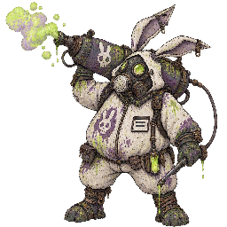
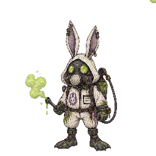
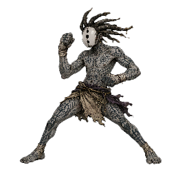
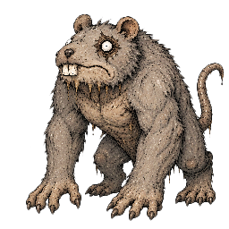
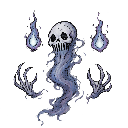
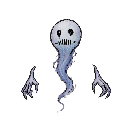

エスパー
- 捕獲率
- 12
- 経験値
- 48
進化
進化しない
覚える技
| 習得 | 技 | タイプ | 威力 | 命中 | PP | 分類 |
|---|---|---|---|---|---|---|
| Lv.1 | ひっかく | ノーマル | 40 | 100 | 35 | 物理 |
| Lv.2 | あたまぐるぐる | エスパー | 50 | 100 | 25 | 特殊 |
| Lv.3 | つよいねんりき | エスパー | 55 | 100 | 10 | 特殊 |
| Lv.4 | ためてかぜぎり | ノーマル | 80 | 100 | 10 | 特殊 |
| Lv.5 | ふしぎなひかりせん | エスパー | 65 | 100 | 20 | 特殊 |
| Lv.7 | ねてるあいてからすう | エスパー | 100 | 100 | 15 | 特殊 |
| Lv.9 | レベルまかせのなみ | エスパー | 0 | 100 | 15 | 特殊 |
| Lv.10 | みえないかべ | エスパー | 0 | 100 | 20 | 変化 |
カウンターできる相手

毒煙袋タイプ一致の弱点攻撃ねてるあいてからすう（エスパー）で弱点2倍（ほか3件）

毒袋タイプ一致の弱点攻撃ねてるあいてからすう（エスパー）で弱点2倍（ほか3件）
 見習い拳タイプ一致の弱点攻撃
見習い拳タイプ一致の弱点攻撃ねてるあいてからすう（エスパー）で弱点2倍（ほか3件）

達人拳タイプ一致の弱点攻撃ねてるあいてからすう（エスパー）で弱点2倍（ほか3件）
カウンターされる相手

たくましいネズミ弱点を突ける技かみつく（あく）で弱点2倍
- 毒煙袋弱点を突ける技
ちをすう（むし）で弱点2倍
- 毒袋弱点を突ける技
ちをすう（むし）で弱点2倍


登場するモンスター構成
変更履歴
sha256:204085251…現在初回記録